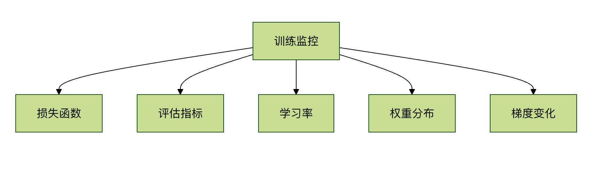
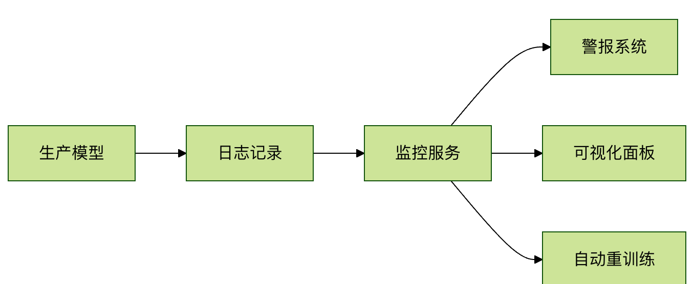

TensorFlow モデル評価とモニタリング
一、モデル評価の基本概念
機械学習プロジェクトにおいて、モデル評価はモデルの性能を検証する重要なステップです。実環境でのモデルのパフォーマンスを把握し、モデル最適化の指針となります。
1.1 なぜモデル評価が必要なのか
- 性能の検証：モデルが期待どおりの効果を達成しているか確認する
- モデルの選択：異なるモデルの良し悪しを比較する
- パラメータ調整：ハイパーパラメータ調整の方向性を示す
- 過学習の防止：モデルがトレーニングデータに過剰適応していないか検出する
1.2 評価指標の種類
| 指標の種類 | 適用シナリオ | 一般的な指標 |
|---|---|---|
| 分類指標 | 分類問題 | 正確度、適合率、再現率、F1スコア |
| 回帰指標 | 回帰問題 | MSE、MAE、R² |
| クラスタリング指標 | 教師なし学習 | シルエット係数、Davies-Bouldin指数 |
二、TensorFlow 評価ツール
TensorFlow はモデルの性能を評価するためのさまざまなツールと方法を提供しています。
2.1 組み込み評価指標
例
import tensorflow as tf
# 一般的な分類指標
metrics = [
tf.keras.metrics.BinaryAccuracy(),
tf.keras.metrics.Precision(),
tf.keras.metrics.Recall(),
tf.keras.metrics.AUC()
]
# 一般的な回帰指標
metrics = [
tf.keras.metrics.MeanSquaredError(),
tf.keras.metrics.MeanAbsoluteError(),
tf.keras.metrics.RootMeanSquaredError()
]
# 一般的な分類指標
metrics = [
tf.keras.metrics.BinaryAccuracy(),
tf.keras.metrics.Precision(),
tf.keras.metrics.Recall(),
tf.keras.metrics.AUC()
]
# 一般的な回帰指標
metrics = [
tf.keras.metrics.MeanSquaredError(),
tf.keras.metrics.MeanAbsoluteError(),
tf.keras.metrics.RootMeanSquaredError()
]
2.2 評価フロー
1. モデルをコンパイルするときに指標を指定する
例
model.compile(
optimizer='adam',
loss='binary_crossentropy',
metrics=['accuracy', tf.keras.metrics.AUC()]
)
optimizer='adam',
loss='binary_crossentropy',
metrics=['accuracy', tf.keras.metrics.AUC()]
)
2. evaluate メソッドを使用して評価する
例
test_loss, test_acc, test_auc = model.evaluate(
test_images, test_labels, verbose=2
)
test_images, test_labels, verbose=2
)
3. カスタム評価関数
例
import tensorflow as tf
@tf.function
def custom_metric(y_true, y_pred):
threshold = 0.5
y_pred = tf.cast(y_pred > threshold, tf.float32)
# 正例の割合だけでなく、正確度を計算する
correct_predictions = tf.cast(tf.equal(y_true, y_pred), tf.float32)
return tf.reduce_mean(correct_predictions)
model.compile(
optimizer='adam',
loss='binary_crossentropy',
metrics=[custom_metric, 'accuracy'] # 標準の正確度指標も参考として同時に保持できる
)
@tf.function
def custom_metric(y_true, y_pred):
threshold = 0.5
y_pred = tf.cast(y_pred > threshold, tf.float32)
# 正例の割合だけでなく、正確度を計算する
correct_predictions = tf.cast(tf.equal(y_true, y_pred), tf.float32)
return tf.reduce_mean(correct_predictions)
model.compile(
optimizer='adam',
loss='binary_crossentropy',
metrics=[custom_metric, 'accuracy'] # 標準の正確度指標も参考として同時に保持できる
)
三、モデルのモニタリングと可視化
1. TensorBoard 統合
TensorBoard は TensorFlow の可視化ツールであり、トレーニングプロセスをリアルタイムでモニタリングできます。
例
# コールバック関数を設定する
tensorboard_callback = tf.keras.callbacks.TensorBoard(
log_dir='./logs',
histogram_freq=1,
write_graph=True,
write_images=True
)
# モデルトレーニング時にコールバックを追加する
model.fit(
train_data,
epochs=10,
validation_data=val_data,
callbacks=[tensorboard_callback]
)
tensorboard_callback = tf.keras.callbacks.TensorBoard(
log_dir='./logs',
histogram_freq=1,
write_graph=True,
write_images=True
)
# モデルトレーニング時にコールバックを追加する
model.fit(
train_data,
epochs=10,
validation_data=val_data,
callbacks=[tensorboard_callback]
)
TensorBoard を起動：
tensorboard --logdir=./logs
2. モニタリングの重要指標

四、高度な評価技術
4.1 クロスバリデーション
例
from sklearn.model_selection import KFold
import numpy as np
# データを準備する
X = np.array(...)
y = np.array(...)
# 5分割クロスバリデーション
kfold = KFold(n_splits=5, shuffle=True)
fold_no = 1
for train, test in kfold.split(X, y):
# モデルを作成する
model = create_model()
# モデルをトレーニングする
model.fit(X[train], y[train], epochs=10)
# モデルを評価する
scores = model.evaluate(X[test], y[test])
print(f'Fold {fold_no} - {model.metrics_names[0]}: {scores[0]}')
fold_no += 1
import numpy as np
# データを準備する
X = np.array(...)
y = np.array(...)
# 5分割クロスバリデーション
kfold = KFold(n_splits=5, shuffle=True)
fold_no = 1
for train, test in kfold.split(X, y):
# モデルを作成する
model = create_model()
# モデルをトレーニングする
model.fit(X[train], y[train], epochs=10)
# モデルを評価する
scores = model.evaluate(X[test], y[test])
print(f'Fold {fold_no} - {model.metrics_names[0]}: {scores[0]}')
fold_no += 1
4.2 混同行列の分析
例
from sklearn.metrics import confusion_matrix
import seaborn as sns
import matplotlib.pyplot as plt
# 予測結果を取得する
y_pred = model.predict(test_images)
y_pred_classes = np.argmax(y_pred, axis=1)
# 混同行列を生成する
conf_mat = confusion_matrix(test_labels, y_pred_classes)
# 可視化
plt.figure(figsize=(10, 8))
sns.heatmap(conf_mat, annot=True, fmt='d')
plt.xlabel('Predicted')
plt.ylabel('Actual')
plt.show()
import seaborn as sns
import matplotlib.pyplot as plt
# 予測結果を取得する
y_pred = model.predict(test_images)
y_pred_classes = np.argmax(y_pred, axis=1)
# 混同行列を生成する
conf_mat = confusion_matrix(test_labels, y_pred_classes)
# 可視化
plt.figure(figsize=(10, 8))
sns.heatmap(conf_mat, annot=True, fmt='d')
plt.xlabel('Predicted')
plt.ylabel('Actual')
plt.show()
五、モデルデプロイ後のモニタリング
5.1 本番環境でのモニタリングの要点
- データドリフト検出：入力データの分布変化をモニタリングする
- コンセプトドリフト検出：特徴量とターゲットの関係の変化をモニタリングする
- 性能低下の検出：定期的にモデルの性能を評価する
- 異常入力の検出：異常な入力サンプルを識別する
5.2 モニタリングシステムのアーキテクチャ

六、実践演習
6.1 演習タスク
- MNIST データセットでシンプルな CNN モデルをトレーニングする
- 以下の評価機能を実装する：
- トレーニング中の正確度と損失のモニタリング
- テストセットでの混同行列の分析
- TensorBoard を使用してトレーニングプロセスを可視化する
- カスタム評価指標の実装を試みる
6.2 参考コードフレームワーク
例
import tensorflow as tf
from tensorflow.keras import layers
# 1. データ準備
(train_images, train_labels), (test_images, test_labels) = tf.keras.datasets.mnist.load_data()
train_images = train_images.reshape((60000, 28, 28, 1)).astype('float32') / 255
test_images = test_images.reshape((10000, 28, 28, 1)).astype('float32') / 255
# 2. モデル構築
model = tf.keras.Sequential([
layers.Conv2D(32, (3, 3), activation='relu', input_shape=(28, 28, 1)),
layers.MaxPooling2D((2, 2)),
layers.Flatten(),
layers.Dense(10, activation='softmax')
])
# 3. モデルのコンパイル（選択した指標を追加）
model.compile(...)
# 4. モデルのトレーニング（TensorBoardコールバックを追加）
history = model.fit(...)
# 5. モデルの評価
test_loss, test_acc = model.evaluate(...)
# 6. 混同行列の分析
# あなたのコード...
from tensorflow.keras import layers
# 1. データ準備
(train_images, train_labels), (test_images, test_labels) = tf.keras.datasets.mnist.load_data()
train_images = train_images.reshape((60000, 28, 28, 1)).astype('float32') / 255
test_images = test_images.reshape((10000, 28, 28, 1)).astype('float32') / 255
# 2. モデル構築
model = tf.keras.Sequential([
layers.Conv2D(32, (3, 3), activation='relu', input_shape=(28, 28, 1)),
layers.MaxPooling2D((2, 2)),
layers.Flatten(),
layers.Dense(10, activation='softmax')
])
# 3. モデルのコンパイル（選択した指標を追加）
model.compile(...)
# 4. モデルのトレーニング（TensorBoardコールバックを追加）
history = model.fit(...)
# 5. モデルの評価
test_loss, test_acc = model.evaluate(...)
# 6. 混同行列の分析
# あなたのコード...
クリックしてノートを共有
ノートはこの記事の内容を拡張したものである必要があります！
記事の投稿はこちらをクリック
登録招待コードの取得方法
ノートを共有する前にログインが必要です！
登録招待コードの取得方法